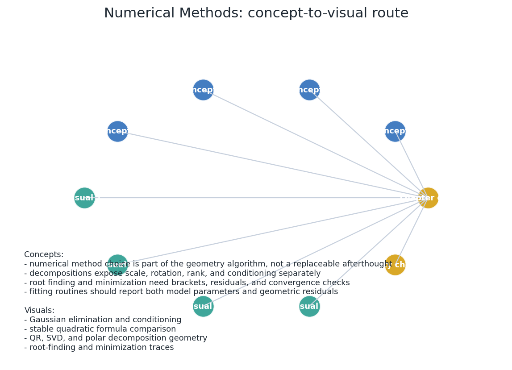
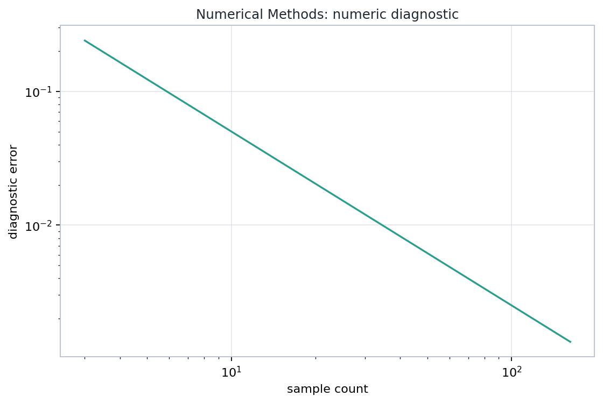
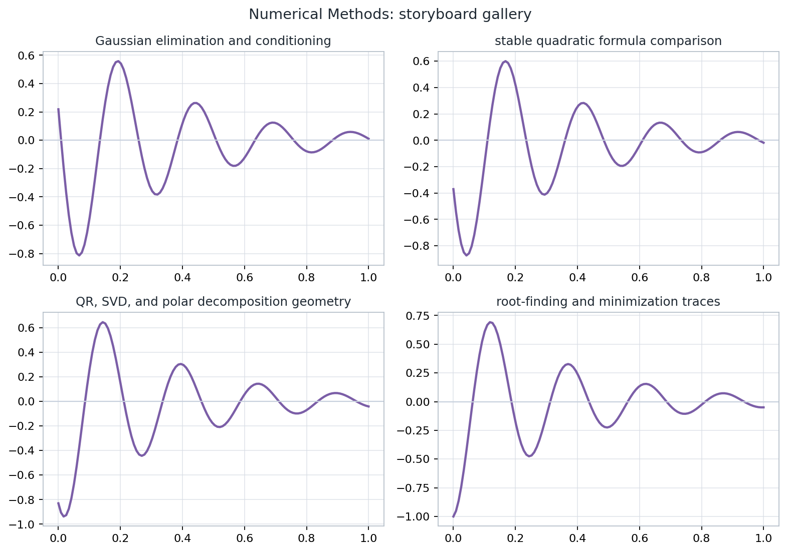

Appendix A: Numerical Methods
Linear solves, polynomial elimination, decompositions, rotations, roots, minimization, fitting, subdivision, and calculus as inspectable geometry contracts.
Source orientation: printed pages 827-922; PDF pages 874-969.
From Reference Appendix To Computable Lesson

Notebook artifact: concept route map generated from the Appendix A lesson.
- Represent the object: matrix, polynomial, rotation, curve, or constraint.
- Name the domain: free, clamped, periodic, bounded, or constrained.
- Choose a residual that can be asserted after the visual is drawn.
Each topic asks: what does the algorithm preserve, what can fail in floating point, and what diagnostic would convince a graphics programmer that the answer is trustworthy?
Linear Solvers Need A Residual Contract
- Pivoting is a numerical geometry choice: it changes arithmetic exposure while preserving the solution set.
- Back substitution is only meaningful if small divisors are treated as signals, not surprises.
- The displayed intersection, projection, or fit should cite the residual that certifies it.
Polynomial Intersections Are Candidate Pipelines
- Line or ray against polynomial patch: reduce to roots along a parameter.
- Two implicit quadrics: eliminate variables, then validate candidate points.
- Surface contact: a repeated or nearly repeated root is a geometric event.
Elimination can introduce extraneous candidates and coefficient growth. A robust implementation keeps the algebraic candidate list separate from the final geometric classification.
Decompositions Expose What A Matrix Is Doing
Use when triangular solves, least squares, or stable orthogonal bases are the object of interest.
Use when rank, anisotropic scale, or a best low-dimensional approximation matters.
Use when a transform should be interpreted as rotation plus symmetric stretch.
3D Rotations: Choose The Representation For The Task
| Representation | Strength | Diagnostic |
|---|---|---|
| Matrix | Direct action on points and frames | \(R^T R \approx I,\ \det R \approx 1\) |
| Axis-angle | Human-readable local edit | unit axis, branch convention |
| Quaternion | Compact composition and interpolation | \(\|q\| \approx 1\), sign convention |
Root Finding Balances Certificates And Speed
Use the expression that avoids subtracting nearly equal numbers, then verify by substitution.
- small function value: \(|f(t)| \le \tau_f\)
- small update: \(|\Delta t| \le \tau_t(1+|t|)\)
- bounded iteration count with a declared fallback
Minimization Adds Geometry To Search
The Hessian shape explains why the same step length may be too timid in one direction and too aggressive in another.
Least Squares Fitting Is Projection With Evidence
The residual is orthogonal to every allowed change in the fitted model. This is the geometric meaning of the algebra.
| Primitive | Parameter evidence | Residual evidence |
|---|---|---|
| line or plane | basis, offset | orthogonal distances |
| circle or sphere | center, radius | radial deviations |
| quadric | implicit coefficients | algebraic and geometric error |
Subdivision Is A Rendering Decision With A Proof Obligation
| Rule | What it controls | Typical risk |
|---|---|---|
| Uniform | parameter spacing | misses high curvature |
| Arc length | visual pacing | requires length approximation |
| Midpoint distance | chord deviation | local test can miss variation |
| Variation | direction change | depends on tangent robustness |
The curve drawing is not only a polyline. It is a polyline plus a declared tolerance and the stopping rule that made the tolerance meaningful.
Calculus Tools Explain Contact And Constraint
- implicit surfaces are level sets of scalar fields;
- contact occurs when tangent spaces align or become singular;
- constrained extrema are candidates until residuals are checked.
Four Ways A Plausible Picture Can Be Wrong

Notebook artifact: a compact diagnostic that records the numerical invariant for the lesson.
A useful tolerance has units, scale, and a named residual. A Boolean result without those three pieces is a debugging liability.
Applied Lab: Make One Numerical Claim Accountable

The lab replaces the sample data with a chosen graphics primitive, then records the residual and the failure condition.
- Choose one primitive: a fitted circle, an implicit intersection, a rotated frame, or a curve segment.
- Vary one tolerance or one coordinate frame.
- Save the rendered artifact and the residual that supports it.
- Explain what input change would invalidate the result.
What Appendix A Carries Forward
- Linear and polynomial solvers need residuals, rank information, and candidate validation.
- Decompositions and rotations make representation choices visible.
- Root finding and minimization need both convergence checks and geometric interpretation.
- Fitting and subdivision must report the approximation error they control.